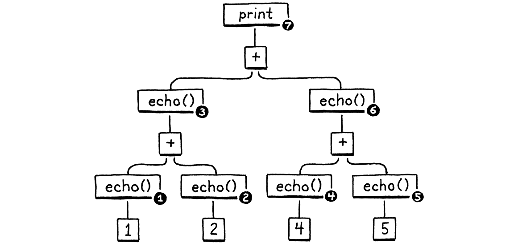
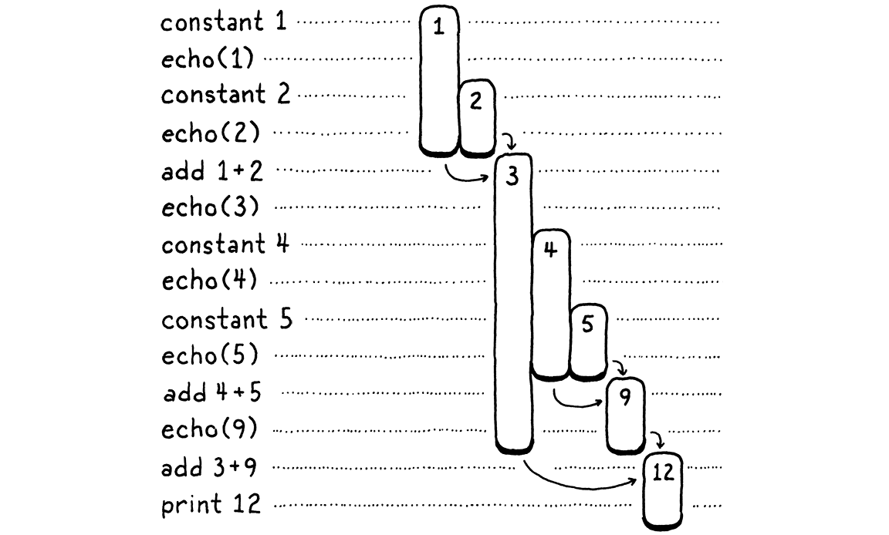
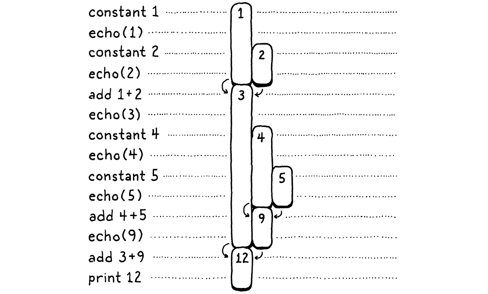
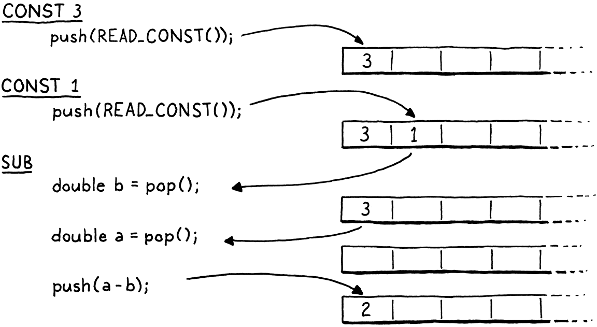

虚拟机
魔术师守着自己的秘密，不是因为秘密有多宏大、多重要，而是因为它们太小、太琐碎了。舞台上那些令人惊叹的效果，往往源于一个荒唐透顶的诀窍，荒唐到魔术师自己都不好意思承认：就是这么变的。
克里斯托弗·普里斯特，《致命魔术》
我们已经花了不少时间，讨论怎么把一个程序表示成一串字节码指令，可这感觉就像对着填充好的死动物标本学生物。我们在理论上知道指令是什么，却从没见过它们动起来，所以很难真正理解它们到底做什么。要是我们对字节码的行为还没弄明白，就很难写出一个能输出字节码的编译器。
所以，在动手搭新解释器的前端之前，我们先从后端开始——执行指令的虚拟机。虚拟机为字节码注入生命。看着指令活蹦乱跳，能让我们更清楚地想象出，编译器会怎样把用户的源代码翻译成一连串指令。
15 . 1一台指令执行机
虚拟机是解释器内部架构的一部分。你把一个代码块——字面意义上的 Chunk——递给虚拟机，它就把这块跑起来。虚拟机的代码和数据结构住在一个新模块里。
新建文件
#ifndef clox_vm_h #define clox_vm_h #include "chunk.h" typedef struct { Chunk* chunk; } VM; void initVM(); void freeVM(); #endif
照例，从简单处起步。虚拟机会慢慢攒起一大堆它需要跟踪的状态，所以我们现在就定义一个结构体，把那些统统塞进去。眼下，我们只存它执行的那个字节码块。
跟我们创建的大多数数据结构一样，我们也定义函数来创建和拆掉一台虚拟机。实现如下：
新建文件
#include "common.h" #include "vm.h" VM vm; void initVM() { } void freeVM() { }
好吧，把这些函数叫作「实现」有点勉强。我们还没有任何像样的状态要初始化或释放，所以这些函数是空的。相信我，早晚会有的。
这里稍有意思的一行，是那句 vm 的声明。这个模块到最后会有一大堆函数，挨个给它们传一个指向虚拟机的指针会是件苦差事。于是我们改为声明一个单独的全局虚拟机对象。反正我们只需要一台，而且这样能让书里的代码在纸面上轻省一点。
在往虚拟机里灌好玩的代码之前，我们先把线路接到解释器的主入口上。
int main(int argc, const char* argv[]) {
在 main() 内
initVM();
Chunk chunk;
解释器一启动，我们就把虚拟机拉起来。等到快要退出时，再把它收掉。
disassembleChunk(&chunk, "test chunk");
在 main() 内
freeVM();
freeChunk(&chunk);
最后一项例行公事：
#include "debug.h"
#include "vm.h"
int main(int argc, const char* argv[]) {
现在你跑 clox，它会在创建上一章那个手工编写的字节码块之前，先把虚拟机启动起来。虚拟机已就位待命，那我们教它干点活吧。
15 . 1 . 1执行指令
当我们命令虚拟机去解释一个字节码块时，它就一跃而动。
disassembleChunk(&chunk, "test chunk");
在 main() 内
interpret(&chunk);
freeVM();
这个函数是进入虚拟机的主入口。它的声明长这样：
void freeVM();
加在 freeVM() 之后
InterpretResult interpret(Chunk* chunk);
#endif
虚拟机跑完这个块，然后用这个枚举里的一个值来回应：
} VM;
加在结构体 VM 之后
typedef enum { INTERPRET_OK, INTERPRET_COMPILE_ERROR, INTERPRET_RUNTIME_ERROR } InterpretResult;
void initVM(); void freeVM();
这个结果我们暂时还没用上，但等我们有了能报告静态错误的编译器、有了能侦测运行时错误的虚拟机，解释器就会用它来决定进程的退出码怎么设。
我们正一步步逼近真正的实现。
加在 freeVM() 之后
InterpretResult interpret(Chunk* chunk) { vm.chunk = chunk; vm.ip = vm.chunk->code; return run(); }
首先，我们把正在执行的字节码块存进虚拟机。然后调用 run()——一个真正负责跑字节码指令的内部辅助函数。在这两部分之间，有一行耐人寻味。这个 ip 是什么名堂？
虚拟机在字节码里一路推进时，得跟踪自己走到哪儿了——也就是当前正在执行的那条指令的位置。我们不在 run() 里用一个局部变量来记它，因为到后面会有别的函数需要访问它。于是我们把它存成虚拟机的一个字段。
typedef struct {
Chunk* chunk;
在结构体 VM 内
uint8_t* ip;
} VM;
它的类型是一个字节指针。我们用一个货真价实的 C 指针，直接指进字节码数组的中间，而不是用整数下标之类的东西，因为解引用指针比按下标查数组元素要快。
「IP」这个名字是传统叫法，而且——跟计算机科学里许多传统名字不同——它其实很好懂：它是一个**指令指针**。世界上几乎每一套指令集，无论真实的还是虚拟的，都有这么一个寄存器或变量。
我们把 ip 初始化为指向块里第一个代码字节。那条指令我们还没执行，所以 ip 指向的是即将被执行的指令。虚拟机运行的整个过程中都是如此：IP 永远指向下一条指令，而不是当前正在处理的那条。
真正好玩的事发生在 run() 里。
加在 freeVM() 之后
static InterpretResult run() { #define READ_BYTE() (*vm.ip++) for (;;) { uint8_t instruction; switch (instruction = READ_BYTE()) { case OP_RETURN: { return INTERPRET_OK; } } } #undef READ_BYTE }
这是整个 clox 里最重要的一个函数，没有之一。解释器执行用户程序时，大约 90% 的时间都花在 run() 里面。它是虚拟机跳动的心脏。
撇开那段戏剧性的开场白，它在概念上其实相当简单。我们有一个外层的循环，一圈接一圈地转。每转过一圈，我们就读取并执行一条字节码指令。
要处理一条指令，我们先弄清面对的是哪一种指令。READ_BYTE 宏读出 ip 当前指向的字节，然后推进指令指针。任何指令的第一个字节都是操作码。拿到一个数字形式操作码后，我们得跳到实现该指令语义的那段 C 代码处。这个过程叫解码或分派指令。
每一条指令、每一次执行，我们都要走一遍这个流程，所以这是整个虚拟机里对性能最挑剔的部分。编程语言的传说里塞满了各种巧妙技巧来高效地做字节码分派，一路能追溯到计算机的早期。
悲哉，最快的那些方案要么需要 C 的非标准扩展，要么需要手写的汇编代码。对 clox 来说，我们保持简单。就跟我们的反汇编器一样，我们用一个巨大的 switch 语句，每个操作码一个 case。每个 case 的主体实现该操作码的行为。
到目前为止，我们只处理一条指令 OP_RETURN，而它唯一做的事就是彻底跳出循环。到最后，这条指令会用于从当前 Lox 函数返回，但我们还没有函数，所以先临时把它挪作他用，来结束执行。
那我们接着把另一条指令也支持上。
switch (instruction = READ_BYTE()) {
在 run() 内
case OP_CONSTANT: { Value constant = READ_CONSTANT(); printValue(constant); printf("\n"); break; }
case OP_RETURN: {
我们手头还没有足够的机械装置，能拿常量做点有用的事。眼下先把它打印出来，好让我们这些解释器狂人看看虚拟机内部在发生什么。那次 printf() 调用需要引入一个头文件。
加到文件开头
#include <stdio.h>
#include "common.h"
我们还要定义一个新宏。
#define READ_BYTE() (*vm.ip++)
在 run() 内
#define READ_CONSTANT() (vm.chunk->constants.values[READ_BYTE()])
for (;;) {
READ_CONSTANT() 从字节码里读出下一个字节，把得到的数字当作下标，去块的常量表里查出对应的 Value。后面几章，我们还会加几条带「指向常量」的操作数的指令，所以现在就先把这个小助手宏搭好。
跟前面那个 READ_BYTE 宏一样，READ_CONSTANT 只在 run() 里面用。为了让这种作用范围更明确，宏定义本身就框在这一个函数里。我们在开头定义它们，然后——因为我们在乎——在结尾处取消定义。
#undef READ_BYTE
在 run() 内
#undef READ_CONSTANT
}
15 . 1 . 2执行追踪
现在跑一下 clox，它会执行我们上一章手工编写的那个块，并往终端吐出 1.2。我们能看出它是能工作的，可这只是因为 OP_CONSTANT 的实现里有一段临时用来记录该值的代码。等这条指令干起它该干的活、把常量一路输送给其他想要消费它的操作之后，虚拟机就会变成一个黑盒。这让我们这些虚拟机实现者的日子更难过。
为了给自己帮把手，现在正好给虚拟机加上一些诊断日志，就像我们当初给字节码块本身加的那样。事实上，我们还能复用同一份代码。我们不希望这套日志一直开着——它只是给我们这些虚拟机狂人用的，不是给 Lox 用户——所以我们先创建一个旗标，把它藏在后面。
#include <stdint.h>
#define DEBUG_TRACE_EXECUTION
#endif
这个旗标一旦定义，虚拟机就会在执行每条指令之前，先反汇编并打印它。我们之前的反汇编器是一次性地、静态地走遍整个块，而这里是动态地、边跑边反汇编指令。
for (;;) {
在 run() 内
#ifdef DEBUG_TRACE_EXECUTION disassembleInstruction(vm.chunk, (int)(vm.ip - vm.chunk->code)); #endif
uint8_t instruction;
由于 disassembleInstruction() 接受的是整数形式的字节偏移，而我们存的是当前指令的直接指针，所以先要做一点指针运算，把 ip 换算成相对字节码开头的偏移。然后反汇编从这个字节开始的那条指令。
一如往常，调用一个函数之前，得先把它的声明引进来。
#include "common.h"
#include "debug.h"
#include "vm.h"
我知道到目前为止这段代码不算特别惊艳——这段代码字面上就是一个包在 for 循环里的 switch 语句。但信不信由你，这是我们虚拟机的两大主要部件之一。有了它，我们就能命令式地执行指令。它的简单是一种美德——干的活越少，就能干得越快。对比一下我们在 jlox 里用访问者模式遍历 AST 时那一大堆复杂和开销。
15 . 2值栈操纵器
除了命令式的副作用，Lox 还有各种产生、修改、消费值的表达式。因此，我们编译出来的字节码需要一种办法，在需要这些值的不同指令之间来回穿梭运送。比如：
print 3 - 2;
显然，我们需要给常量 3 和 2、print 语句，以及那次减法各配上指令。可减法指令怎么知道 3 是被减数、2 是减数？print 指令又怎么知道要打印那次减法的结果？
把话说得更细一点，看看这玩意儿：
fun echo(n) { print n; return n; } print echo(echo(1) + echo(2)) + echo(echo(4) + echo(5));
我把每个子表达式都包进一次 echo() 调用，它会打印出自己的参数再把它返回。这个副作用让我们能看清运算的确切顺序。
先别管虚拟机。就想想 Lox 本身的语义。算术运算符的操作数显然要先求值，才能执行运算本身。（要是不知道 a 和 b 是什么，想把 a + b 加起来可不容易。）另外，我们在 jlox 里实现表达式时，规定左操作数必须先于右操作数求值。
下面是那条 print 语句的语法树：

在从左到右求值，以及表达式那样嵌套的前提下，任何一个正确的 Lox 实现，都必须按这个顺序打印出这些数字：
1 // from echo(1) 2 // from echo(2) 3 // from echo(1 + 2) 4 // from echo(4) 5 // from echo(5) 9 // from echo(4 + 5) 12 // from print 3 + 9
我们那台旧的 jlox 解释器，靠递归遍历 AST 来做到这点。走的是一次后序遍历：先递归下去走左操作数分支，再走右操作数分支，最后才求值节点自身。
求完左操作数后，jlox 需要把那个结果暂存在某处，同时它正忙着往右操作数那棵子树里遍历下去。我们用 Java 的一个局部变量来存。我们那台递归的树遍历解释器，会给每个正在求值的节点创建一个独有的 Java 调用帧，所以需要多少这样的局部变量，就有多少。
在 clox 里，我们的 run() 函数不是递归的——那棵嵌套的表达式树被压平成一串线性的指令。我们没有用 C 局部变量这种奢侈，那这些临时值该存到哪、又该怎么存？你大概已经猜到了，但我想把这一点彻底讲透，因为它是编程里我们习以为常的一面，却很少去了解计算机为什么要这样设计。
来做个小怪练习。我们一步一步走一遍上面那个程序的执行过程：

左边是代码的各个步骤。右边是我们跟踪的值。每根条形代表一个数字。它在这个值第一次被产出时开始——要么是个常量，要么是某次加法的结果。条形的长度表示某个先前产出的值需要保留多久，到它最终被某个操作消费掉时结束。
一步步走过去，你会看到一个个值冒出来，过一会儿又被吃掉。活得最久的是那些由加法左侧产出的值。它们会在我们处理右边那个操作数表达式期间一直待着。
在上面的图里，我让每个不同的数字各占一列。我们节省一点。一个数字一旦被消费掉，我们就允许它的列被后面另一个值复用。换句话说，我们把上面那些空隙统统填上，从右边把数字推挤进去：

这里头有点意思。等我们把所有东西都挪过去，每个数字在整个生命周期里居然还能待在同一列里。而且不留任何空隙。换句话说，一个数字只要比另一个先出现，它存活的时间就至少和第二个一样长。最先出现的数字，最后才被消费。嗯……后进先出……哎呀，这不就是个栈嘛！
第二张图里，每当我们引入一个数字，就从右边把它压入栈。数字被消费时，永远是从最右边往左弹出。
既然我们需要跟踪的临时值天生就有栈一样的行为，虚拟机就用一个栈来管理它们。一条指令「产出」一个值时，就把它压入栈。需要消费一个或多个值时，就从栈里弹出它们。
15 . 2 . 1虚拟机的栈
也许这看起来不算什么了不起的洞见，可我爱基于栈的虚拟机。你第一次看魔术时，觉得那真是魔法。可等你弄懂了门道——通常不过是某种机械花招或障眼法——那份惊奇就烟消云散了。计算机科学里有少数几个想法，即便我把它们拆开、里里外外学了个遍，最初的几分光彩依然还在。基于栈的虚拟机就是其中之一。
这一章你会看到，在基于栈的虚拟机里执行指令简单得要命。后面几章你还会发现，把一门源语言编译到基于栈的指令集上是小菜一碟。而就是这样一种架构，快得足以被生产级的语言实现采用。几乎让人觉得在编程语言这场游戏里作弊。
好嘞，到写代码的时间了！这就是那个栈：
typedef struct {
Chunk* chunk;
uint8_t* ip;
在结构体 VM 内
Value stack[STACK_MAX]; Value* stackTop;
} VM;
我们在一段裸 C 数组之上自己实现栈的语义。栈底——第一个被压入、最后一个被弹出的值——在数组的第零个元素处，之后压入的值跟在它后面。如果我们把「crepe」（可丽饼——我最爱的可堆叠早餐）的字母按顺序压入栈，得到的 C 数组长这样：
由于栈会随着值的压入和弹出而伸缩，我们需要跟踪栈顶在数组里的位置。跟 ip 一样，我们用直接指针而不是整数下标，因为解引用这个指针，比每次需要时都从下标算出偏移要快。
这个指针指向栈顶值所在元素紧后面的那个数组元素。这看着有点怪，但几乎每个实现都这么做。它意味着，我们可以通过指向数组第零个元素来表示栈是空的。
要是我们指向栈顶那个元素，那么对空栈就得指向元素 -1。这在 C 里是未定义的。当我们把值压入栈时……
……stackTop 永远指向最后一项的紧后面。
我是这么记的：stackTop 指向下一个要压入的值将要去的位置。我们能在栈上存的最大值数量（至少目前）是：
#include "chunk.h"
#define STACK_MAX 256
typedef struct {
给虚拟机一个固定的栈大小，意味着某些指令序列有可能压入太多值、把栈空间用光——也就是经典的「栈溢出」。我们本可以按需动态扩容，但眼下保持简单。因为虚拟机要用到 Value，我们得把它的声明包含进来。
#include "chunk.h"
#include "value.h"
#define STACK_MAX 256
既然虚拟机有了一些像样的状态，我们就来初始化它。
void initVM() {
在 initVM() 内
resetStack();
}
这里用到了这个辅助函数：
加在变量 vm 之后
static void resetStack() { vm.stackTop = vm.stack; }
由于栈数组是直接内联声明在虚拟机结构体里的，我们不需要分配它。我们甚至不用清理数组里那些没用到的格子——只要在它们被存入值之前不去访问就行了。我们唯一需要的初始化，就是把 stackTop 设成指向数组的开头，来表示栈是空的。
这个栈的协议支持两种操作：
InterpretResult interpret(Chunk* chunk);
加在 interpret() 之后
void push(Value value); Value pop();
#endif
你可以把一个新值压入栈顶，也可以把最近压入的那个值弹出去。先看第一个函数：
加在 freeVM() 之后
void push(Value value) { *vm.stackTop = value; vm.stackTop++; }
如果你对 C 的指针语法和运算有点生疏，这是个不错的热身。第一行把 value 存进栈顶那个数组元素。记住，stackTop 指向最后一个已用元素紧后面、下一个可用的位置。这一行把值存进那个格子里。然后我们把指针本身自增，让它指向数组里下一个未用的格子，因为前一个格子已经被占了。
弹出是镜像的另一面。
加在 push() 之后
Value pop() { vm.stackTop--; return *vm.stackTop; }
首先，我们把栈指针往回挪一格，回到数组里最近用过的那个格子。然后按那个位置取出值并返回。我们不需要显式地把它从数组里「移除」——把 stackTop 往下挪，就足以把那个格子标记为不再使用。
15 . 2 . 2栈追踪
我们有了一个能用的栈，但很难看出它在正常工作。等我们开始实现更复杂的指令、编译并运行更大段的代码时，那个数组里最终会塞满一大堆值。要是能对栈有一些可见性，我们这些虚拟机狂人的日子会好过些。
为此，每当我们追踪执行时，也会在解释每条指令之前显示栈的当前内容。
#ifdef DEBUG_TRACE_EXECUTION
在 run() 内
printf(" "); for (Value* slot = vm.stack; slot < vm.stackTop; slot++) { printf("[ "); printValue(*slot); printf(" ]"); } printf("\n");
disassembleInstruction(vm.chunk,
我们循环一遍，打印数组里每个值，从第一个（栈底）开始，到栈顶为止。这让我们能观察每条指令对栈造成的影响。输出相当啰嗦，但当我们像做手术一样，从解释器的内脏里剜出一只恶心的 bug 时，它很有用。
栈备好了，我们回头看看那两条指令。先是这条：
case OP_CONSTANT: {
Value constant = READ_CONSTANT();
在 run() 内
替换 2 行
push(constant);
break;
上一章，我含糊其辞地说了 OP_CONSTANT 指令怎么「加载」一个常量。现在有了栈，你就知道真正产出一个值意味着什么了：它被压入栈。
case OP_RETURN: {
在 run() 内
printValue(pop()); printf("\n");
return INTERPRET_OK;
然后我们让 OP_RETURN 在退出之前弹出栈并打印栈顶值。等我们给 clox 加上对真正函数的支持时，会改掉这段代码。但眼下，这给了我们一条路子，让虚拟机执行简单的指令序列并显示结果。
15 . 3一台算术计算器
我们虚拟机的灵魂所在已经就位。字节码循环分派并执行指令。栈随着值的流转而伸缩。这两半都能工作了，但仅凭目前这两条最基础的指令，很难体会它们配合得有多巧妙。那我们教解释器做算术吧。
从最简单的算术运算开始：一元取负。
var a = 1.2; print -a; // -1.2.
前缀 - 运算符接受一个操作数，也就是要取负的值。它产出一个结果。我们还没折腾语法解析器，但可以先加上上面那段语法将要编译成的那条字节码指令。
OP_CONSTANT,
在枚举 OpCode 内
OP_NEGATE,
OP_RETURN,
我们这样执行它：
}
在 run() 内
case OP_NEGATE: push(-pop()); break;
case OP_RETURN: {
这条指令需要一个值来操作，就从栈里弹出一个。把它取负，再把结果压回去供后面的指令使用。再简单不过了。我们也能反汇编它。
case OP_CONSTANT:
return constantInstruction("OP_CONSTANT", chunk, offset);
在 disassembleInstruction() 内
case OP_NEGATE: return simpleInstruction("OP_NEGATE", offset);
case OP_RETURN:
我们还能在测试块里试一把。
writeChunk(&chunk, constant, 123);
在 main() 内
writeChunk(&chunk, OP_NEGATE, 123);
writeChunk(&chunk, OP_RETURN, 123);
加载完常量之后、返回之前，我们执行取负指令。栈上那个常量就被替换成了它的相反数。然后返回指令把它打印出来：
-1.2
神奇！
15 . 3 . 1二元运算符
好吧，一元运算符没那么惊艳。栈上我们始终只有一个值。要真正看出点深度，得用二元运算符。Lox 有四个二元算术运算符：加、减、乘、除。我们干脆一次把它们全实现掉。
OP_CONSTANT,
在枚举 OpCode 内
OP_ADD, OP_SUBTRACT, OP_MULTIPLY, OP_DIVIDE,
OP_NEGATE,
回到字节码循环里，它们是这样执行的：
}
在 run() 内
case OP_ADD: BINARY_OP(+); break; case OP_SUBTRACT: BINARY_OP(-); break; case OP_MULTIPLY: BINARY_OP(*); break; case OP_DIVIDE: BINARY_OP(/); break;
case OP_NEGATE: push(-pop()); break;
这四条指令之间唯一的差别，在于它们最终用哪个底层 C 运算符来合并两个操作数。包着那个核心算术表达式的是些样板代码：把值从栈上取下来，再把结果压回去。等我们之后加上动态类型，这些样板会变得更长。为了不把这段代码重复写四遍，我把它包进了一个宏。
#define READ_CONSTANT() (vm.chunk->constants.values[READ_BYTE()])
在 run() 内
#define BINARY_OP(op) \ do { \ double b = pop(); \ double a = pop(); \ push(a op b); \ } while (false)
for (;;) {
我承认，这是对 C 预处理器一次相当胆大妄为的用法。我一度犹豫要不要这么做，但等后面几章，我们需要给每个操作数加上类型检查之类的东西时，你会庆幸的。要把同一段代码领着你走四遍，可是件苦差事。
如果你还不熟悉这个窍门，那个外层的 do while 循环大概看着很怪。这个宏需要展开成一连串语句。作为谨慎的宏作者，我们要确保这些语句在宏展开后都落在同一个作用域里。想象你定义了：
#define WAKE_UP() makeCoffee(); drinkCoffee();
然后这么用它：
if (morning) WAKE_UP();
本意是只在 morning 为真时才执行宏体里的两条语句。可它展开成：
if (morning) makeCoffee(); drinkCoffee();;
糟糕。if 只粘上了第一条语句。你可能会想，用个块就能修好。
#define WAKE_UP() { makeCoffee(); drinkCoffee(); }
这样好些，但你仍有风险：
if (morning) WAKE_UP(); else sleepIn();
现在你会因为宏块后面那个多余的 ; 而在 else 上报一个编译错误。在宏里用 do while 循环看着古怪，但它给了你一种办法，把多条语句装进一个块里，同时又允许结尾带一个分号。
我们说到哪儿了？对了，那个宏体干的事很直白。二元运算符接受两个操作数，所以弹出两次。拿这两个值做运算，然后把结果压回去。
请特别留意两次弹出的顺序。注意，我们把第一个弹出的操作数赋给 b，而不是 a。看起来反过来了。当操作数本身被计算出来时，先求左、后求右。这意味着左操作数先于右操作数被压入。所以右操作数会在栈顶。因此，我们第一个弹出的是 b。
比如，如果我们编译 3 - 1，指令之间的数据流长这样：

跟我们在 run() 里对其他宏做的一样，在函数结尾处把自己收拾干净。
#undef READ_CONSTANT
在 run() 内
#undef BINARY_OP
}
最后是反汇编器的支持。
case OP_CONSTANT:
return constantInstruction("OP_CONSTANT", chunk, offset);
在 disassembleInstruction() 内
case OP_ADD: return simpleInstruction("OP_ADD", offset); case OP_SUBTRACT: return simpleInstruction("OP_SUBTRACT", offset); case OP_MULTIPLY: return simpleInstruction("OP_MULTIPLY", offset); case OP_DIVIDE: return simpleInstruction("OP_DIVIDE", offset);
case OP_NEGATE:
算术指令的格式很简单，跟 OP_RETURN 一样。尽管算术运算符要接受操作数——那些操作数在栈上——算术字节码指令本身并不带操作数。
让我们用一个更大的表达式，来检验一下这些新指令的身手：
在我们已有的示例块基础上，这是把那棵 AST 手工编译成字节码所需的额外指令。
int constant = addConstant(&chunk, 1.2); writeChunk(&chunk, OP_CONSTANT, 123); writeChunk(&chunk, constant, 123);
在 main() 内
constant = addConstant(&chunk, 3.4); writeChunk(&chunk, OP_CONSTANT, 123); writeChunk(&chunk, constant, 123); writeChunk(&chunk, OP_ADD, 123); constant = addConstant(&chunk, 5.6); writeChunk(&chunk, OP_CONSTANT, 123); writeChunk(&chunk, constant, 123); writeChunk(&chunk, OP_DIVIDE, 123);
writeChunk(&chunk, OP_NEGATE, 123); writeChunk(&chunk, OP_RETURN, 123);
先做加法。左常量 1.2 的指令已经在那儿了，所以我们再加一条给 3.4 的。然后用 OP_ADD 把这两个加起来，结果留在栈上。这就覆盖了除法的左侧。接着压入 5.6，再用加法结果除以它。最后，把那个结果取负。
注意，OP_ADD 的产出如何隐式地流入、成为 OP_DIVIDE 的一个操作数，而这两条指令谁也没有直接耦合到对方。这就是栈的魔法。栈让我们能自由地组合指令，而它们既不需要任何复杂机制，也无须知晓数据流。栈就像一块共享的工作区，它们都从中读写。
在这个小小的示例块里，栈依然只长到两个值那么高，但等我们开始把 Lox 源代码编译成字节码时，就会遇到用掉多得多的栈的块。在此期间，不妨拿这个手工编写的块玩玩，算算各种不同的嵌套算术表达式，看看值是怎么流过指令和栈的。
你不如趁现在把这个瘾过够。这是我们最后一个手工搭建的块。下次再回头碰字节码时，我们就会写一个编译器来替我们生成它了。
习题
-
对下面这些表达式，你会生成什么样的字节码指令序列：
1 * 2 + 3 1 + 2 * 3 3 - 2 - 1 1 + 2 * 3 - 4 / -5
（记住，Lox 没有负数字面量的语法，所以
-5是对数字 5 取负。） -
如果我们真想要一套极简的指令集，可以去掉
OP_NEGATE或OP_SUBTRACT中的某一个。请给出你为下面这个表达式生成的字节码指令序列：4 - 3 * -2
先是不用
OP_NEGATE的版本。然后是不用OP_SUBTRACT的版本。基于上面这些，你觉得同时保留这两条指令合理吗？为什么合理，或为什么不合理？还有没有别的冗余指令，你会考虑一并加进来？
-
我们虚拟机的栈是固定大小的，而且我们不检查压入一个值是否会把它撑爆。这意味着一段错误的指令序列可能让我们的解释器崩溃，或者陷入未定义行为。请通过按需动态扩容栈来避免这一点。
这么做有什么代价和好处？
-
为了解释
OP_NEGATE，我们弹出操作数，把值取负，然后把结果压回去。这是个简单的实现，但它不必要地自增又自减了stackTop，因为栈的高度最终没变。直接在栈上就地取负、不去动stackTop，可能更快。试试看，看你能否测出性能差异。还有没有别的指令，你能做类似的优化？
设计说明：基于寄存器的字节码
本书余下的部分，我们会一丝不苟地围绕一套基于栈的字节码指令集来实现一个解释器。外面还有另一个字节码架构家族——基于寄存器的。尽管名字如此，这些字节码指令用起来并不像 x64 这类真实芯片里的寄存器那么难对付。用真实的硬件寄存器，整个程序通常也就只有那么几个，于是你花大量功夫设法高效地使用它们、把东西搬进搬出。
在基于寄存器的虚拟机里，你依然有一个栈。临时值依然会被压入，不再需要时被弹出。主要区别在于，指令可以从栈上的任意位置读取自己的输入，并能把输出存进特定的栈槽位。
看这段小小的 Lox 脚本：
var a = 1; var b = 2; var c = a + b;
在我们基于栈的虚拟机里，最后那条语句会被编译成大概这样：
load <a> // 读取局部变量 a 并压入栈。 load <b> // 读取局部变量 b 并压入栈。 add // 弹出两个值，相加，把结果压回栈。 store <c> // 弹出值并存入局部变量 c。
（如果你还不太懂 load 和 store 指令，别担心。等我们实现变量时，会讲得详细得多。）我们有四条各自独立的指令。也就是说，要四次穿过字节码解释循环，四条指令要解码和分派。代码至少七个字节——四个给操作码，另外三个给指明加载和存储哪些局部变量的操作数。三次压栈、三次弹出。好大的工作量！
在基于寄存器的指令集里，指令可以直接从局部变量读写。上面最后那条语句的字节码长这样：
add <a> <b> <c> // 从 a 和 b 读取值，相加，存入 c。
add 指令更大——它有三个指令操作数，指明它从栈上哪里读取输入、把结果写到哪里。但由于局部变量就活在栈上，add 指令可以直接从 a 和 b 读取，然后把结果直接存进 c。
只有一条指令要解码和分派，而且整个东西塞进四个字节就够了。由于多了操作数，解码更复杂，但总的来说还是划算。没有压栈、弹栈或其他栈操作。
Lua 的主要实现过去是基于栈的。到 Lua 5.0，实现者们切换到了寄存器指令集，并注意到速度有所提升。提升多少，自然很大程度上取决于语言语义的细节、具体的指令集和编译器的精细程度，但这应该足以引起你的注意。
这就引出一个显而易见的问题：我为什么还要把本书剩下的篇幅花在基于栈的字节码上？寄存器虚拟机很妙，但为它写编译器要难不少。对于很可能就是你的第一个编译器来说，我想坚持用一套既易于生成、又易于执行的指令集。基于栈的字节码简单得叫人惊叹。
它在文献和社区里的知名度也高得多。尽管你最终可能会转向更高级的东西，但它是你和其他语言黑客同行之间很好的共同语言。